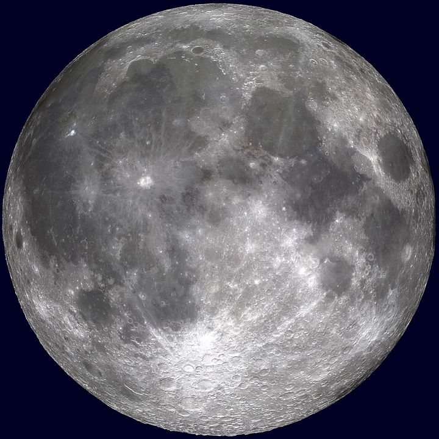
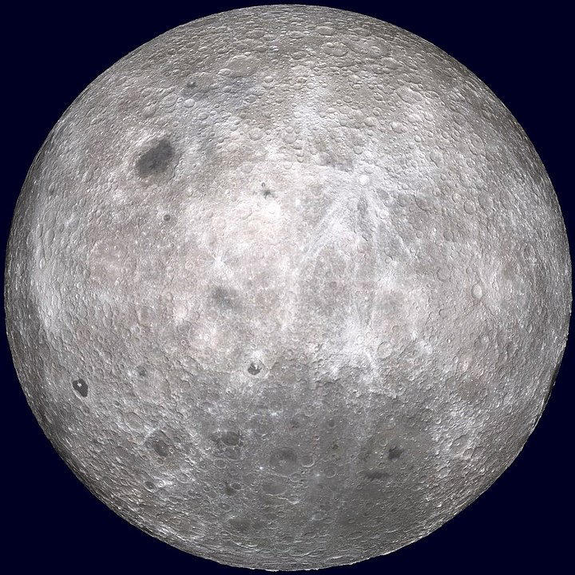

Powierzchnia

Księżyc znajduje się w synchronicznej rotacji, co oznacza, że przez cały czas z Ziemi widoczna jest tylko jedna jego strona. We wczesnej historii ziemskiego satelity tempo jego rotacji spadło i zostało zatrzymane na obecnym poziomie wskutek procesów związanych ze zjawiskami pływowymi. Mimo to wciąż obserwuje się niewielkie odchylenia Księżyca, zwane libracjami, które pozwalają na obserwowanie z Ziemi około 59% jego powierzchni.
|  |  |
|
Widoczna strona Księżyca |
Niewiedoczna strona Księżyca |
Skierowana w stronę Ziemi strona Księżyca jest nazywana stroną widoczną, zaś strona przeciwna – niewidoczną. Strona niewidoczna nie powinna być mylona z ciemną stroną, czyli półkulą aktualnie nieoświetloną przez Słońce (podczas nowiu strona zwrócona ku Ziemi jest ciemną stroną Księżyca). Strona niewidoczna została po raz pierwszy sfotografowana w 1959 roku przez radziecką sondę Łuna 3. Główną cechą wyróżniającą tę stronę jest niemal całkowity brak mórz księżycowych.
Ciemne i względnie nieurozmaicone obszary, które widać gołym okiem na oświetlonej części Księżyca, nazywane są morzami księżycowymi (łac. maria, poj. mare); termin ten nawiązuje do przekonań starożytnych astronomów, którzy uznawali, że są one wypełnione wodą. Obecnie wiemy, że są to obszary zestalonej magmy. Bazalt, powstały z zastygłej lawy, wypełnił kratery meteorytowe utworzone przez spadające odłamki skalne (Oceanus Procellarum to jeden z wyjątków, jeśli chodzi o tę regułę; jego powstanie nie jest związane z żadnym kraterem). Morza znajdują się niemal wyłącznie na widocznej stronie Księżyca, gdzie zajmują 31% powierzchni, na stronie niewidocznej prawie nie występują (jedynie 2% powierzchni). Dotychczas nie sformułowano przekonującej przyczyny takiego rozmieszczenia mórz księżycowych, ostatnio zwraca się uwagę na większą koncentrację pierwiastków radioaktywnych, które produkują ciepło na widocznej półkuli, co wykazały mapy geochemiczne wykonane przez spektrometr gamma Lunar Prospectora. Obszary zawierające dużą liczbę wulkanów tarczowych i kopuł wulkanicznych znajdują się na terenie mórz półkuli widocznej.
Morza i Oceany na Księżycu |
|
|
Nazwa |
Nazwa Polska |
|
Oceanus Procellarum |
Ocean Burz |
|
Mare Nubium |
Morze Chmur |
|
Mare Imbrium |
Morze Deszczów |
|
Mare Serenitatis |
Morze Jasności |
|
Mare Serenitatis |
Morze Jasności |
|
Mare Nectaris |
Morze Nektaru |
|
Mare Vaporum |
Morze Oparów |
|
Mare Crisium |
Morze Przesileń |
|
Mare Tranquillitatis |
Morze Spokoju |
|
Mare Humorum |
Morze Wilgoci |
|
Mare Frigoris |
Morze Zimne |
|
Mare Fecunditatis |
Morze Obfitości |
|
Lacus Excellentiae |
Jezioro Doskonałości |
|
Lacus Mortis |
Jezioro Śmierci |
|
Sinus Roris |
Zatoka Rosy |
|
Sinus Iridum |
Zatoka Tęczy |
|
Palus Putredinis |
Bagno Zgnilizny |
Jaśniejsze obszary Księżyca nazywane są wyżynami lub górami (łac. terrae, ang. highlands), ponieważ położone są wyżej niż morza. Kilka największych obszarów górskich na widocznej półkuli znajduje się na obrzeżach ogromnych kraterów meteorytowych, z których wiele zostało wypełnionych bazaltem; uważa się je za pozostałości pierścieni uformowanych przez fale uderzeniowe. Głównym czynnikiem odróżniającym góry ziemskie od księżycowych jest fakt, że te ostatnie nie powstały w wyniku procesów tektonicznych, a jako efekt zderzeń kosmicznych. Zdjęcia wykonane w ramach misji Clementine pokazują, że cztery obszary górskie na skraju krateru Peary’ego na księżycowym biegunie północnym pozostają oświetlone przez cały czas. Istnienie takich „szczytów wiecznego światła” właśnie tam jest możliwe dzięki niezwykle małemu odchyleniu osi obrotu Księżyca od płaszczyzny ekliptyki. Jednak obszary takie nie zostały zaobserwowane na biegunie południowym, mimo że brzegi krateru Shackleton pozostają oświetlone przez 80% dnia. Innym następstwem niewielkiego nachylenia osi jest występowanie na dnach kraterów znajdujących się w pobliżu biegunów obszarów wiecznie zacienionych.
Powierzchnia Księżyca nosi wyraźne ślady licznych uderzeń różnej wielkości odłamkami skalnymi. Kratery uderzeniowe powstają w przypadku zderzenia asteroidy lub komety z powierzchnią ciała niebieskiego; na Księżycu znajduje się około pół miliona kraterów o średnicy powyżej 1 km. Ponieważ uderzenia odłamków skalnych następują dość regularnie, na podstawie badań zagęszczenia kraterów na poszczególnych obszarach można określić wiek danej powierzchni. Brak czynników wpływających na erozję (z powodu braku atmosfery) oraz brak aktywności tektonicznej sprawił, że wiele kraterów pozostało do dziś w stanie niemal nienaruszonym, przynajmniej porównując je do ich ziemskich odpowiedników. Największym z księżycowych kraterów, uznawanym także za największy w całym Układzie Słonecznym, jest basen Biegun Południowy – Aitken (ang. South Pole-Aitken basin). Znajduje się on na niewidocznej półkuli, pomiędzy biegunem południowym a równikiem; jego średnica wynosi 2500 km, a głębokość – 13 km. Duże kratery uderzeniowe na widocznej stronie to między innymi Imbrium, Serenitatis, Crisium i Nectaris.
Największe kratery |
||
|
Krater |
Srednica [km] |
Głębokość [km] |
|
Basen Biegun Południowy – Aitken |
2500 |
13 |
|
Imbrium |
1160 |
2,9 |
|
Orientale |
930 |
6,04 |
|
Serenitatis |
920 |
2,14 |
|
Australe |
880 |
2,13 |
|
Nectaris |
860 |
5,38 |
|
Crisium |
740 |
4,57 |
|
Smythii |
740 |
5 |
|
Mutus–Vlacq |
700 |
3 |
|
Humboldtianum |
650 |
4,2 |
|
Mendel–Rydberg |
630 |
5,24 |
|
Hertzsprung |
570 |
5,31 |
|
Ingenii |
560 |
4,5 |
Powierzchnia Księżyca pokryta jest warstwą silnie rozdrobnionego materiału skalnego, zwanego regolitem. Jej powstanie powiązane jest z uderzeniami meteorów w powierzchnię Księżyca, toteż warstwa obecna na starszych powierzchniach jest generalnie grubsza niż ta na stosunkowo młodych obszarach. Morza księżycowe pokryte są generalnie 3–5 m regolitu, podczas gdy warstwa pokrywająca wyżyny osiąga od 10 do 20 m grubości. Głębiej pod najmocniej rozdrobnionym regolitem znajduje się warstwa, do której odnosi się termin „megaregolit”. Pokrywa ta jest znacznie grubsza, sięga dziesiątki kilometrów pod powierzchnię Księżyca, i obejmuje warstwę silnie skruszonej skały.
Komety oraz meteoroidy nieustannie bombardujące Księżyc najprawdopodobniej dostarczyły na jego powierzchnię pewną ilość wody. W takim przypadku cząsteczki wody szybko rozpadłyby się na tlen i wodór pod wpływem nadfioletu (atmosfera księżycowa, z racji rzadkości, pochłania niezwykle małą część tego promieniowania), te zaś – w warunkach słabej grawitacji – uleciałyby po pewnym czasie w przestrzeń kosmiczną. Jednak ze względu na niezwykle małe nachylenie osi obrotu Księżyca do płaszczyzny ekliptyki (zaledwie 1,5°) światło Słońca nie dociera do wnętrza głębokich kraterów znajdujących się w pobliżu biegunów, co stwarza na tych obszarach warunki do stabilnego istnienia cząsteczek wody. Podczas misji Clementine wykonano mapy kraterów położonych blisko bieguna południowego, wewnątrz których zachodzi takie zjawisko; symulacje komputerowe wykazały, że nawet 14 000 km² powierzchni Księżyca może pozostawać w wiecznym zacienieniu. Dane zebrane przez Clementine sugerują obecność lodu w tych rejonach, zaś wskazania spektrometru neutronowego Lunar Prospectora wykazują nadzwyczaj wysoką koncentrację wodoru w wierzchnich warstwach regolitu na obszarach okołobiegunowych. Ilość znajdującej się tam wody szacuje się na około 1 km³. Lód może być wydobywany, a następnie rozdzielany na atomy tlenu i wodoru przy użyciu generatorów nuklearnych lub elektrowni zasilanych energią słoneczną. Obecność pewnej ilości nadającej się do użycia wody jest ważnym czynnikiem umożliwiającym ewentualną kolonizację Księżyca w przyszłości, transport wody z Ziemi byłby bowiem niezwykle kosztowny. Jednak niedawne obserwacje dokonane za pomocą radioteleskopu Arecibo pokazują, że rzekomy lód mógł być po prostu odłamkami skał wyrzuconymi po stosunkowo niedawnych uderzeniach meteorów. Kwestia ilości wody znajdującej się na Księżycu wciąż pozostaje nierozwiązana. Na podstawie danych dostarczonych przez sondy Chandrayaan-1, Deep Impact oraz Cassini-Huygens, która dokonała pomiarów w 1997 roku, we wrześniu 2009 roku stwierdzono stałe występowanie wody oraz hydroksylu, wchodzących w reakcje z cząsteczkami skał i pyłu, szczególnie w górnych kilku milimetrach gruntu księżycowego. Miejsce znalezienia cząsteczek wody jest sporym zaskoczeniem, ponieważ do tej pory szukano jej nie na nasłonecznionych powierzchniach, a w głębokich kraterach i na biegunach Księżyca. Przywiezione w czasie wypraw Apollo księżycowe skały również zawierały śladowe ilości wody, jednak uznano wtedy, że woda dostała się do próbek już na Ziemi na skutek nieszczelności pojemników.